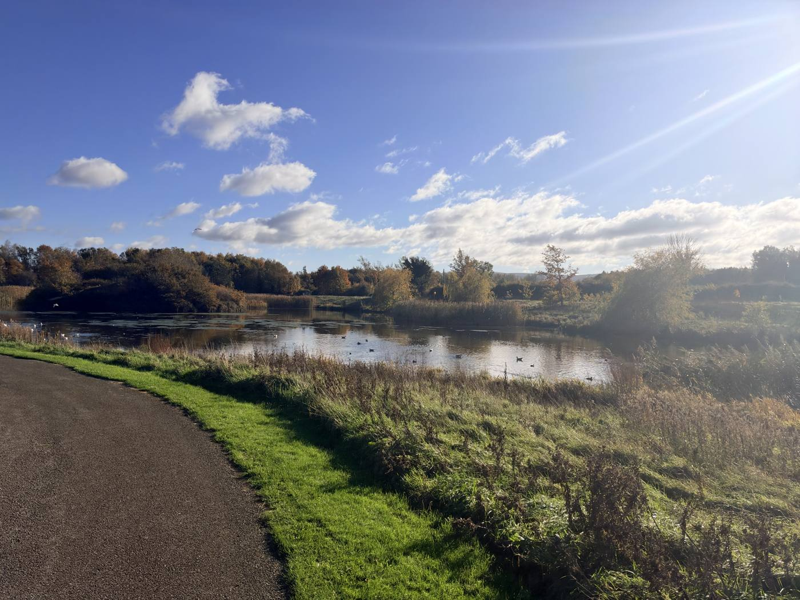
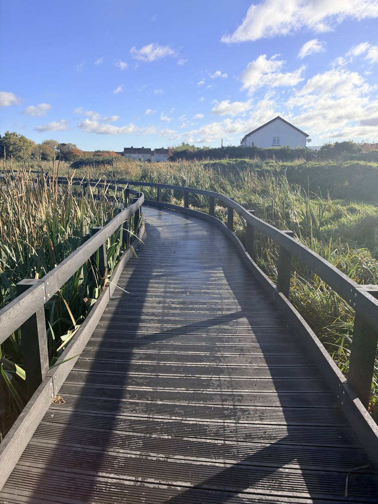
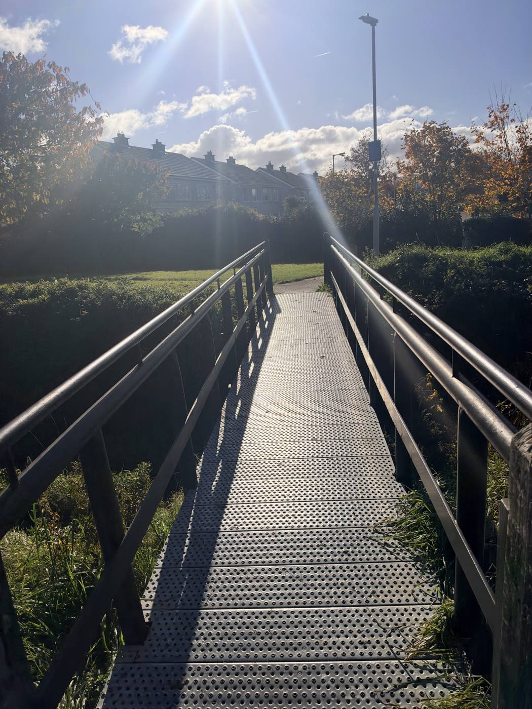

School walk · Tymon Park, east of the M50
Tymon Park: the lake, the flood gate and the wetland
A short there-and-back walk beside the Poddle in Tymon Park, east of the M50. It takes in a lake full of waterbirds, the new gate that holds back floods and a wetland that cleans the water, all on park paths and away from traffic.
- Length
- About 1.6 km there and back
- Time
- 1 to 1½ hours with stops
- Start and finish
- The Limekiln Road entrance to Tymon Park, by the Lakeside Birds sign
- Ground
- Flat park paths and a boardwalk; no roads to cross. Can be muddy after rain.
- Best for
- All classes, 1st to 6th
There is a printable workbook for this walk, Tymon Park River Walk, at three levels from 1st to 6th class, with activities for every stop.
Before you go
- The lake and river have deep, steep edges in places. Keep the class on the paths and back from the water, especially at the flow-control structure and on the boardwalk.
- Don’t visit just after very heavy rain: the lake is designed to rise quickly then, by up to three metres.
- Tymon Park is a busy public park with dogs, bikes and runners. Agree a meeting point at the start.
- Please don’t feed bread to the birds, and keep away from nests in spring.
Please plan the visit under your school’s own outings policy, and walk the route yourself first: paths and works change.
The route
The blue line is the river: solid where it is open, dotted where it runs underground. The numbers are the stops. River line © OpenStreetMap contributors.
The stops
Stop 1: The Limekiln lake
At the Lakeside Birds sign, in from the Limekiln Road entrance
The Poddle flows through this lake. It is one of the best places in Dublin to see waterbirds: surveys for the flood scheme counted 16 to 19 kinds on the Tymon lakes, including mute swans, mallard, coots, moorhens, tufted ducks, little grebes and gulls. Swans, coots and moorhens nest in the reeds.
- Look for
- Swans, ducks, coots and moorhens. Herons and little egrets sometimes stand still at the edge, waiting for fish.
- Try this
- Use the Lakeside Birds sign to name the birds you can see. Make a tally: which bird is the most common today?
- Talk about
- Why might so many birds choose to live here, in the middle of a city?

The path along the Limekiln lake in Tymon Park. Photo: Mark Finegan, November 2026. Stop 2: The flood gate
The flow-control structure at the east end of the lake
This concrete structure with railings is the first finished part of the River Poddle Flood Alleviation Scheme. It came into use on 20 February 2025. In a big storm it lets only a set amount of water through, so the lake fills up behind the raised bank and can rise by up to three metres. The water is let out slowly once the storm has passed, so the streets downstream in Kimmage and Harold’s Cross don’t flood.
- Look for
- The raised grassy bank (the embankment) and the opening where the water leaves the lake.
- Try this
- Find something about three metres tall, like a lamp post or a tree. Imagine the lake rising that high in a storm.
- Talk about
- Homes in Kimmage and Harold’s Cross flooded in 1987, 1993 and 2011. How does holding water back here help them?

The flow-control structure at the eastern end of the Limekiln lake. Photo: Mark Finegan, November 2026. Stop 3: The wetland that cleans the river
The integrated constructed wetland and its boardwalk
Like most city rivers, the Poddle carries some pollution, washed off roads and roofs or leaking from drains. The city is working hard to fix that. This wetland, built as part of the flood scheme, is part of the answer. In a constructed wetland, water moves slowly through a chain of shallow ponds full of reeds, and the plants, mud and tiny living things take out much of the dirt before it reaches the river.
Surveys found three-spined sticklebacks, a small fish, in the river here. The reeds shelter dragonflies, and on summer evenings bats hunt insects over the reedbeds by the lake.
- Look for
- Reeds and bulrushes, ponds at different levels, and the information sign at the start.
- Try this
- Walk the boardwalk quietly and listen. How many different sounds can you hear: birds, wind in the reeds, water, traffic?
- Talk about
- Why does the water need to move slowly through the wetland to get clean?

The boardwalk through the integrated constructed wetland, Tymon Park. Photo: Mark Finegan, November 2026. Stop 4: The river leaves the park
The small footbridge at the east end of the wetland
From here the Poddle runs on in a narrow, steep-sided channel past Whitehall, towards Kimmage. Just past Kimmage Manor it begins its first long run underground, and on its way it passes under Harold’s Cross, the Grand Canal, St Patrick’s Cathedral and Dublin Castle before it reaches the Liffey at Wellington Quay.
- Look for
- Which way is the water flowing? Look for a grey wagtail, a small grey and yellow bird that bobs its tail by the water.
- Try this
- Stand on the bridge and point the way the river is going. Then turn round and point back to the lake, upstream.
- Talk about
- The river goes underground in the city. Why do you think people covered it over?

The footbridge over the Poddle at the east end of the wetland, Tymon Park. Photo: Mark Finegan, November 2026.
Want to go further?
Older classes can follow the river upstream on the other side of the M50, where it runs through a beech wood with small ponds and a weir, and then under the motorway through a pair of arched tunnels. The footbridge over the M50 at the south of the park links the two halves; allow at least another hour.
The M50 crossing and Tymon pages have photos of that stretch, and the story of Tymon Castle and the esker, a ridge left by the Ice Age.
Back in class, the For teachers page has more ideas, and the workbooks include experiments on mills and floods. Try the Kimmage to Harold’s Cross walk too.